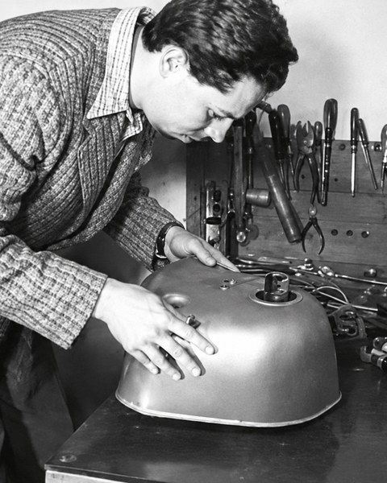
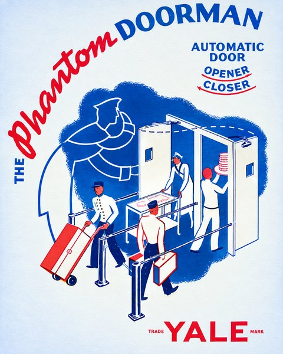
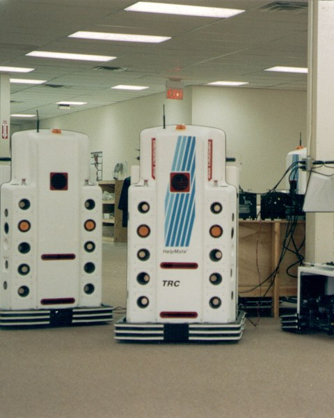
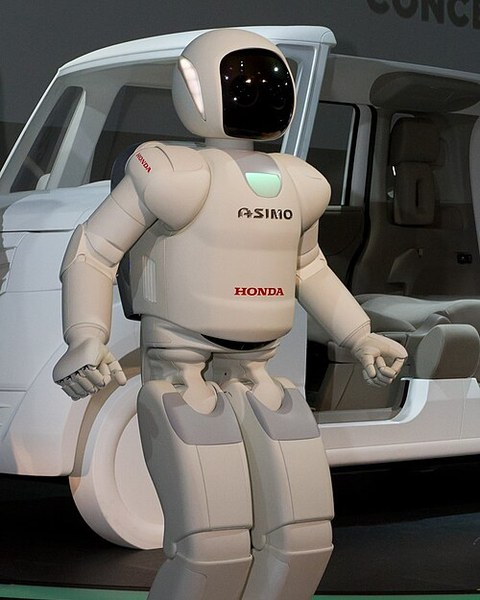

How robots began
What is a robot?
Senses
It picks up something about the world.
Decides
It chooses what to do about it.
Acts
It changes something in the world.
Four people, four steps
- 1921KČKarel and Josef ČapekGive the world the word “robot”
- 1948GW
 W. Grey WalterBuilds tortoise robots that seek light and dodge obstacles
W. Grey WalterBuilds tortoise robots that seek light and dodge obstacles - 1961DE
 Devol and EngelbergerPut the first industrial robot arm to work at General Motors
Devol and EngelbergerPut the first industrial robot arm to work at General Motors - 1970MM
 Masahiro MoriAsks what happens when robots look almost human
Masahiro MoriAsks what happens when robots look almost human - TodaySocial robotsBuilt to deal with people, not only things
Their machines
W. Grey Walter 
Walter’s tortoise robot 
Phantom DoormanDevol’s automatic door, sold by Yale 
HelpMateHospital robots from Engelberger’s later company 
ASIMOHonda’s humanoid, developed by Toru Takenaka, a student of Mori